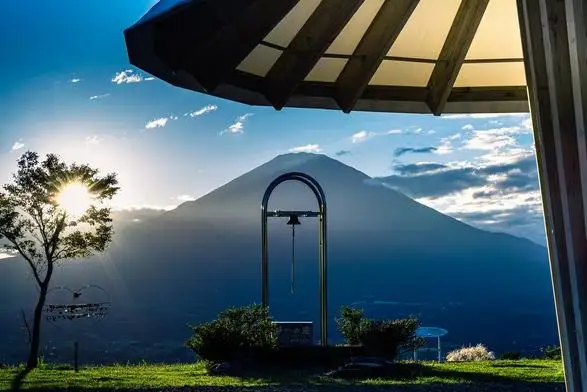
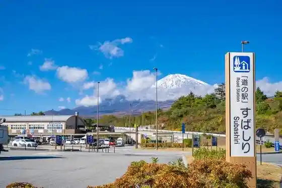
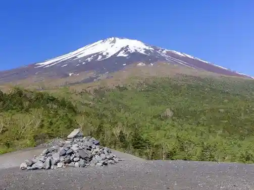
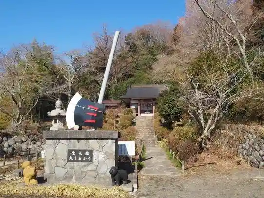
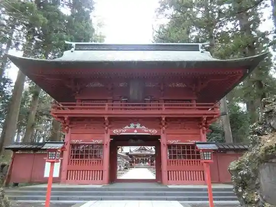

Japan / Shizuoka / Oyamacho
Oyamacho, Shizuoka
Oyamacho · Shizuoka
Oyamacho
Highlighted on the Shizuoka map.

Sights
Chikai no Oka
Oyamacho, Shizuoka · 0550-76-6104 · Official / source link
Roadside Station
Oyamacho, Shizuoka · 0550-76-6363 · Official / source link

Sho Fuji
Oyamacho, Shizuoka · 0550-76-6114 · Official / source link

Kintoki Park
Oyamacho, Shizuoka · 0550-76-6142 · Official / source link

Fujisan Higashiguchi Motomiya Fuji Asama Shrine
Oyamacho, Shizuoka · 0550-75-2038 · Official / source link

Roadside Station
Oyamacho, Shizuoka · 0550-76-5258 · Official / source link
Fuji Supiidoei
Oyamacho, Shizuoka · Official / source link
Maboroshi Falls
Oyamacho, Shizuoka · 055-76-6144 · Official / source link
Ashigaratoge
Oyamacho, Shizuoka · 0550-76-5000 · Official / source link
Kintoki Shrine
Oyamacho, Shizuoka · 0550-76-6114 · Official / source link
Ashigara Service Area
Oyamacho, Shizuoka · 055-083-1842 · Official / source link
Yutaka Mon Park
Oyamacho, Shizuoka · 0550-76-6104 · Official / source link
Fuji Reien
Oyamacho, Shizuoka · 0550-78-0311 · Official / source link